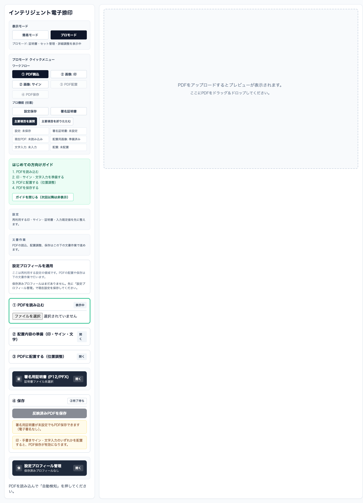

Project Detail
AutoHanko
PDFに印・手書きサイン・文字をまとめて配置し、そのまま保存できるブラウザ完結の電子捺印アプリ。
ブラウザ上でPDFを読み込み、配置内容を準備し、位置を調整しながら反映済みPDFを書き出せる実アプリです。簡易モードとプロモードを切り替えながら、初回利用から詳細運用までひとつの画面で進められます。

Overview
課題から実装まで
Problem
PDFへの捺印やサイン入れは、別ツールへの往復や画像管理の煩雑さで止まりやすくなります。必要な準備から配置、保存までをひとつの流れにまとめたい課題があります。
Audience
申請書、契約書、社内文書などに印・サイン・文字を入れて仕上げたい個人ユーザーや小規模チーム。
Outcome
PDF読込、印影やサインの準備、位置調整、保存までの手順が明確になり、毎回の捺印作業を短い操作で完了できます。
Highlights
操作設計と機能の要点
- 簡易モードで初回操作を迷わせない
- プロモードで証明書や設定プロフィールも扱える
- 印・手書きサイン・文字入力をひとつのPDF作業に統合
ブラウザ完結
PDF配置ワークフロー
簡易 / プロモード
P12 / PFX 証明書
Use Cases
使う場面
申請書や社内書類の捺印
毎回同じ印影や文字を入れるPDF作業を、読込から保存までひと続きで処理できます。
手書きサイン入りPDFの作成
印だけでなく、サイン画像や文字入力も同じ画面で準備して、必要な位置へ配置できます。
証明書を含む詳細運用
プロモードでは署名証明書や設定プロフィール管理も扱え、単発利用から継続運用までつなげられます。
Screens
実際の画面


Open / Feedback
AutoHanko の実物を見る
このプロジェクトは、学んだことを動く形まで落とし込んだ記録です。公開中の画面を試し、感想や改善案があればお寄せください。